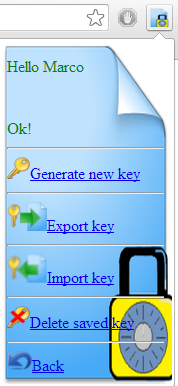

Per cifrare i file Encryptin utilizza l'algoritmo di cifratura a blocchi AES (Rijndael)
utilizzato come standard dal governo degli Stati Uniti d'America.
Per poter essere implementato l'algoritmo ha bisogno di una chiave che verrà generata in modo
casuale da Enrcryptin stesso.
Per generare la chiave non bisogna fare altro che premere Generate New Key nel menù
KEY OPTIONS

.
E' importante salvare la chiave altrimenti non sarà più possibile decifrare i files una volta persa la chiave di cifratura.
A questo proposito dal menu' key options è anche possibile esportare su file la chiave,
importare in Encryptin una chiave già in possesso dell'utente ed infine, cancellare la chiave memorizzata
nel browser.
La cancellazione è irreversibile quindi è fondamentale salvare copia della chiave su un dispositivo personale.
RICORDATI DI SALVARE LA TUA CHIAVE!!!